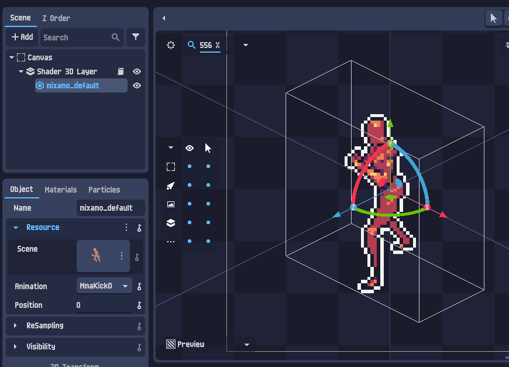
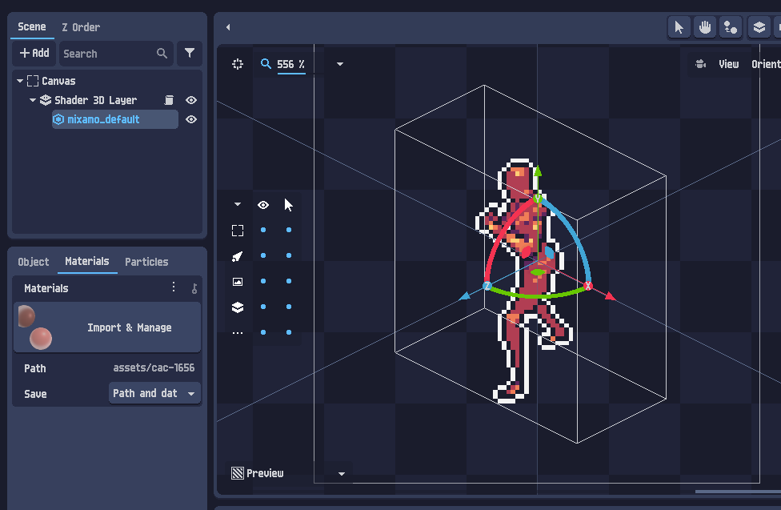
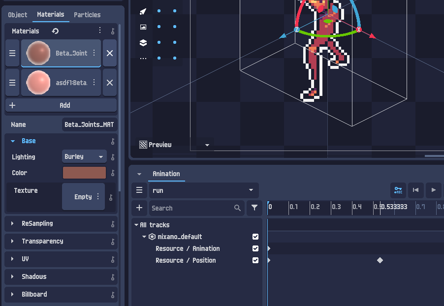
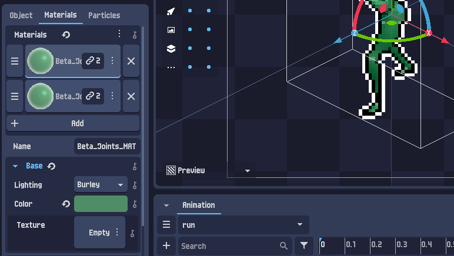
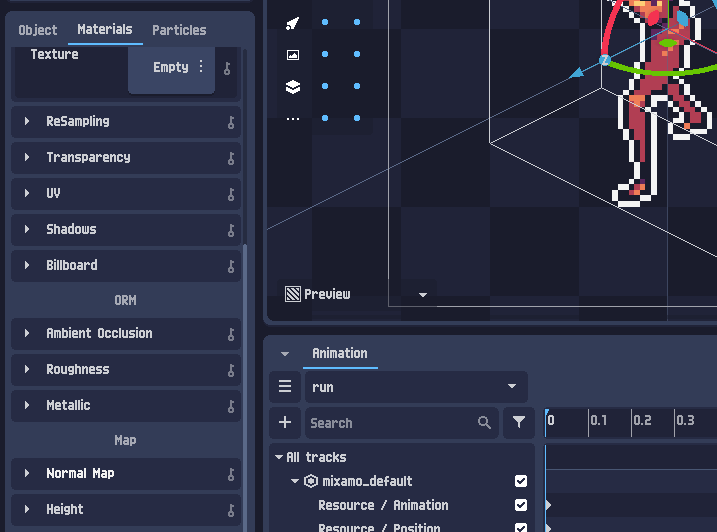
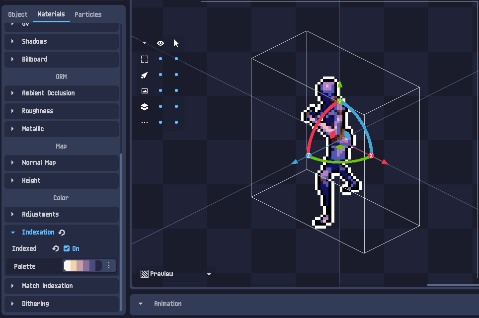
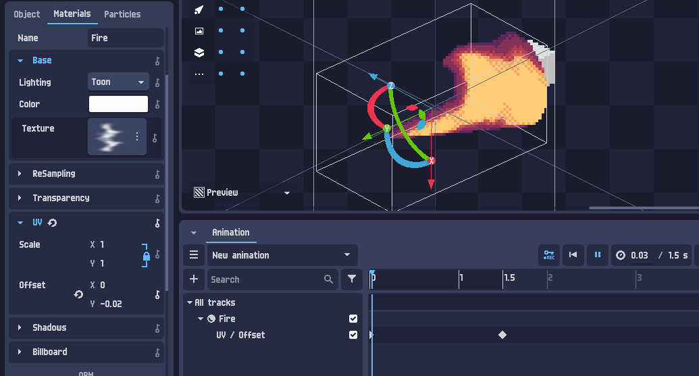

Material editing — 3D anyagok és effektek a shaderben
Amikor egy 3D modellt hozol be a PixelOverbe, a felületeit anyagok (materials) borítják: alapszín, textúra, érdesség, fémesség. Ezeket nemcsak megnézheted, hanem importálhatod és szerkesztheted — sőt, minden anyagra külön indexelést, ditheringet tehetsz, és az értékeit animálhatod (görgő textúra, színváltás). Ebben a leckében végigvesszük az importtól az animált anyagig — élő demókkal.
3D objektum kiválasztása
Az anyagszerkesztés a 3D rétegekhez tartozik. Ha behoztál egy 3D modellt (lásd a hivatalos „First Steps 3D” leckét), az a Scene fában egy Shader 3D Layer alá kerül. Jelöld ki — vagy a fában, vagy közvetlenül a fő nézetben.
A 3D modell felülete nem egyetlen szín: a textúrái és fizikai paraméterei (mennyire fényes, fémes, érdes) együtt adják ki a „bőrét”. Ezt a csomagot hívjuk anyagnak. Egy modellnek több anyaga is lehet (pl. külön a páncél, külön a bőr).

mixamo_default) a Shader 3D Layer alatt. Az Object panelen a Resource (a 3D jelenet), egy Animation és a Position — ez a modell, aminek mindjárt az anyagaihoz nyúlunk.Importálás: Import & Manage
A bal alsó panelen válts az Object fülről a Materials fülre. Itt egy előnézet mutatja a modell anyagait, és egy Import & Manage gomb hozza be őket a projektbe szerkesztésre.

Path és a Save mód.Import után a Materials panel az anyagok listáját mutatja (kis gömb-előnézettel). Kattints egy anyagra, és megjelennek a tulajdonságai alul — itt szerkeszthetsz:

+ Add új, ✕ törlés), és a kijelölt anyag (Beta_Joints_MAT) tulajdonságai — Base: Lighting (itt Burley), Color, Texture. Lent a kulcskocka-idővonal az animáláshoz.Linkelt (megosztott) anyagok
Egy anyag mellett néha egy lánc-ikon 🔗 és egy szám jelenik meg. Ez azt jelenti, hogy ugyanaz az anyag több felületen is használatban van — megosztott példány (shared instance). A varázslat: ha az egyiket szerkeszted, az összes linkelt felület együtt változik. (Másoláskor is keletkezhet ilyen link.)

🔗 2 jelzés: az anyag 2 felületen osztott. A Color zöldre állítva — és a modell összes linkelt felülete egyszerre lett zöld.Ha egy felületet külön akarsz kezelni, kattints a lánc gombra, ezzel leválasztod (unlink), és az anyag egyedivé válik — onnantól a többitől függetlenül szerkesztheted.
Mindkét gömb ugyanazt a (megosztott) anyagot használja. Told a színt — amíg linkelve van, mindkettő követi.
Anyag-tulajdonságok
Egy importált anyag rengeteg beállítást kínál. A leggyakrabban használtak:
| Csoport | Tulajdonság | Mit állít |
|---|---|---|
| Base | Lighting | A megvilágítási modell — pl. Burley (realisztikus) vagy Toon (cel-shaded, sávos). |
Color | Az anyag alapszíne (base color). | |
Texture | Az alaptextúra (base texture), ha van. | |
| ORM | Ambient Occlusion | A felület mélyedéseinek beárnyékolása (saját árnyék). |
Roughness | Érdesség: alacsony = tükörfényes, magas = matt, szórt fény. | |
Metallic | Fémesség: a fémek alig szórnak diffúz fényt, és a tükörfényük az alapszínt veszi fel. | |
| Map | Normal Map | Felületi részletek (dudorok, karcok) fakeelése a fény becsapásával. |
Height | Magasság/parallax a mélységérzethez. | |
| UV | Scale / Offset | A textúra méretezése és eltolása (ezt animálni is lehet — 6. fejezet). |

Egy anyaggömb (a 3D felület helyett). Tekergesd a fizikai paramétereket — és lent a 5. fejezethez kapcsold be a per-anyag pixelizálást is.
Per-anyag shader-effektek
Itt jön a PixelOver igazi csavarja: minden anyagnak saját shader-lánca van — ugyanazok az effektek, amiket a 2D Layer Shadernél megismertél, csak felületenként. A tulajdonság-fa Color csoportjában találod:
- Adjustments — szín-kiigazítás (Hue, Brightness, Contrast…), csak erre az anyagra.
- Indexation — az anyag színeit korlátozott palettára szűkíti. (Lásd: Szín-indexelés.)
- Match indexation — index-alapú átszínezés, akár color cyclinghez.
- Dithering — sima átmenetek kevés színnel. (Lásd: Dithering.)

Adjustments, Indexation (Indexed: On + Palette), Match indexation, Dithering — pont mint a Layer Shaderben. A modell itt anyagszinten lett indexelt pixel-art.Mert így felületenként más-más pixel-art stílust adhatsz: a fémpáncél kaphat egy hideg, kontrasztos palettát, a bőr egy melegebbet, a ruha pedig erős ditheringet — mindezt egyetlen modellen, egyszerre. A fenti Anyag-laborban a Pixelizálás gomb pont ezt a lépést mutatja: indexelés + dithering az anyagra.
Anyag-tulajdonságok animálása
A legtöbb anyag-tulajdonság kulcskockázható (keyframe) az Animation panelen. Ezzel mozgó anyageffekteket kapsz a modell mozgatása nélkül: görgő textúrák, színváltás, animált árnyalás.
A klasszikus példa a UV ▸ Offset animálása: ha a textúra-eltolást folyamatosan léptetjük, a textúra csorog a felületen — folyó víz, láva, vízesés, futószalag. A hivatalos példában egy „Fire” anyag Toon megvilágítással, a UV / Offset kulcskockázva:

Fire anyag, Lighting: Toon, és a UV / Offset animálva az idővonalon → a textúra csorog, lángnyelv-hatás. Egyetlen kulcskockázott érték.Egy felület csempézett textúrával. A UV Offset léptetésével a minta csorog — a felület helyben marad.
Ez NEM color cycling: itt a textúra-koordináta (UV) tolódik, vagyis a minta tényleg „arrébb csúszik”.
Összefoglaló & merre tovább?
A 3D anyag-munkamenet egy lapon:
- Jelöld ki a 3D modellt a
Shader 3D Layeralatt. - Importáld az anyagokat: Materials ▸ Import & Manage (figyelem: leválik az eredeti fájlról).
- Linkelt anyagok: a
🔗 Negy felület → mind változik; a lánc gombbal leválaszthatod. - Tulajdonságok: Base (Lighting/Color/Texture), ORM (AO/Roughness/Metallic), Map (Normal/Height), UV.
- Per-anyag shader: Adjustments, Indexation, Match, Dithering — felületenként.
- Animáció: kulcskockázd a tulajdonságokat (pl. UV Offset) → görgő, élő anyagok.
- Első lépések 2D — az alap-workflow.
- Szín-indexelés — paletták (a per-anyag Indexation alapja).
- Color cycling — paletta-animáció a Shift-tel.
- Dithering — sima átmenetek kevés színnel.
- Material editing — itt vagy.
- Particle systems — a következő hivatalos lecke: részecskerendszerek.
A nagy tanulság: a PixelOverben az „anyag” nem csak szín — fizikai felület (ORM), saját shader-lánc (per-anyag indexálás/dithering) és animálható paraméterek együtt. Ez teszi lehetővé, hogy egyetlen 3D modellből gazdag, felületenként hangolt, mozgó pixel-art szülessen.